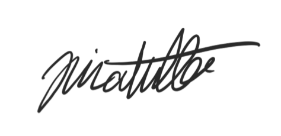

When I started Puffer Labs, I had one goal in mind: delivering stable and high quality software to our customers. Customers are the focus of every facet of our business. The idea is simple: deliver amazing products that your customers love, and everything else will take care of itself. Any other Fortune 500 company can say that they prioritize their customers, but their actions often say the opposite. They often have to report to stakeholders and board members who have different goals in mind: 💰.
This is why at Puffer Labs, we don't have any board members or stakeholders. We don't even deal with real FIAT currency. One of the reasons why Puffer Labs has been voted "Least Capitalist Company" by the World Capitalism Federation is due to our successful integration with our proprietary cryptocurrency, the Puffer Coin™️.
Puffer Labs will continue to stay on the bleeding edge of all technology and providing amazing software products. Our longevity is attributed to our employees. We hope the results will speak for themselves.
Best,
